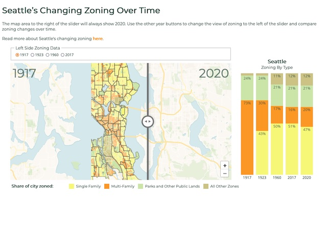

Freelance full-stack software developer by day, violinist by night (you can read more about that on my other website). Many of my creations, projects, and involvements are listed below, but not all of them.
I work primarily in JavaScript and Python / Django, but I've worked with Ruby too, and quite a few other languages in the past. Take a look at my github profile, or email me here.
Aside from writing easily testable and maintainable code, I am also skilled at project management for small teams, website design, and public speaking.
-
EPRI ERoadMap
Worked on a team with CORE-GIS to help design and implement a user interface for an information-rich web map for the Electric Power Research Institute. This site will aid policymakers and industry leaders in figuring out how to electrify transporation infrastructure.
-
Seattle Ready Update
Second in a series of Hazard Ready sites, Seattle and King County Ready is a site that helps residents of King County assess their natural disaster risks. This project updated the site to use the latest data, and added three more languages, including Arabic.
-
Taiji With Eldan

Built a simple little website for my partner to promote his taiji and qigong classes. The goal was to have something responsive and lightweight, that he could easily update himself.
-
Co-author on a best practice guide for using schema.org metadata
POLDER best practice guide to implementing schema.org for data discovery. Read it here, or contact me if that is not available to you.
-
Co-author on a paper published in Polar Science
Polar federated search: New infrastructure to support the polar community. Read it here, or contact me if that is not available to you.
-
POLDER Federated Search

Created the POLDER Federated Search, a customizable domain-specific federated search website, as part of the World Data System International Technology Office, in response to needs identified by the POLDER Working Group.
-
Micromentor
Contributed as a full-stack developer to Micromentor, an online global mentoring platform that is available in five languages.
-
Hitachi Rail
Wrote Git hooks, Python scripts, Django websites, SOAP API clients, and Bash scripts for the group in Hitachi Rail that builds automated train control systems, to support upgrading their source control systems and internal workflow processes.
-
Interactive Seattle Zoning Map
I worked with CORE GIS to create an interactive web map, commissioned by Sightline, that allows people to easily see how the zoning in Seattle has changed over time.
-
Far Star Action Fund
I built a website for Far Star Action Fund, an organization that helps filmmakers spread the message that their films carry beyond the screen and use them as vehicles for advocacy.
-
Traditions of the Ancestors
Contributed as a full-stack developer to Traditions of the Ancestors, which is a site that seeks to build understanding and deepen learning across cultures, by providing cultural information from people who are members of those cultures.
-
PDX Ready
Third in a series of Hazard Ready sites, PDX Ready is a site that helps residents of the Portland Metro Area assess their natural disaster risks in English and Spanish, and features a slick new design by Liz Heidner.
-
Terra Nostra
Terra Nostra is a symphonic work written about climate change. Its creators and sponsors worked with me to create a home for it online. In addition to creating the website for it, I also played in the world premiere of the piece!
-
Seattle Ready
Second in a series of Hazard Ready sites, Seattle and King County Ready is a site that helps residents of King County assess their natural disaster risks in 5 different languages.
-
Hearsay Systems
One of my longest-standing clients was Hearsay Systems, where I worked on their websites product. I may have helped to make a website for your financial advisor! I have also done back-end work for their data pipeline.
-
VirtuosoViolin.com
Built a website for a professional musician. It's hosted on Squarespace, to make it easy for my client to update her calendar of performances, but uses custom styling and development, so it can be exactly what she wants it to be.
-
Missoula Ready
This is the first in a series of Hazard Ready websites - Missoula Ready, a site that helps residents of Missoula County assess their risk for natural disasters.
-
iiifManifestLayouts
Used my OpenSeadragon experience to contribute to iiifManifestLayouts, a library being used in Mirador.
-
Curadora
I was part of the team that created the initial version of Curadora, a website that helps people easily find and book lodging for trips to music festivals.
-
Mansion Global
Contributed on Mansion Global, a luxury real estate website.
-
Open Source Zooming Tools Talk
SeattleJS talk about OpenSeadragon and ZoomHub. Video, slides.
-
Tableau JavaScript API Talk

Getting Started with the JavaScript API was rated among the top ten sessions of the conference, based on attendee feedback. Tableau Customer Conference, 2013
-
Co-author on a paper presented at PNSQC 2010

Using Live Labs Pivot to Make Sense of the Chaos, presented at PNSQC 2010.
-
Chronozoom
I worked with a team of people from Microsoft Live Labs, the University of California at Berkeley, and Microsoft Research in order to create Chronozoom, which is a zooming view of Big History. Chronozoom is an ongoing project; I was involved in the original effort in May of 2010.
-
Master's Thesis

Dendrogram-based Methods for Clustering Refinement, submitted in June of 2005, which includes work from the 2004 paper below, and is dedicated to a very loyal goldfish.
-
Software Testing Research Talk
Software Testing: the BLEEDING EDGE!, presented at Notacon 2005, in Cleveland, OH.
-
Co-author on a paper presented at ISSRE 2004
Tree-Based Methods for Classifying Software Failures, presented at ISSRE 2004.
-
Co-author on a paper presented at ICSE 2003
Automated Support for Classifying Software Failure Reports, presented at ICSE 2003.